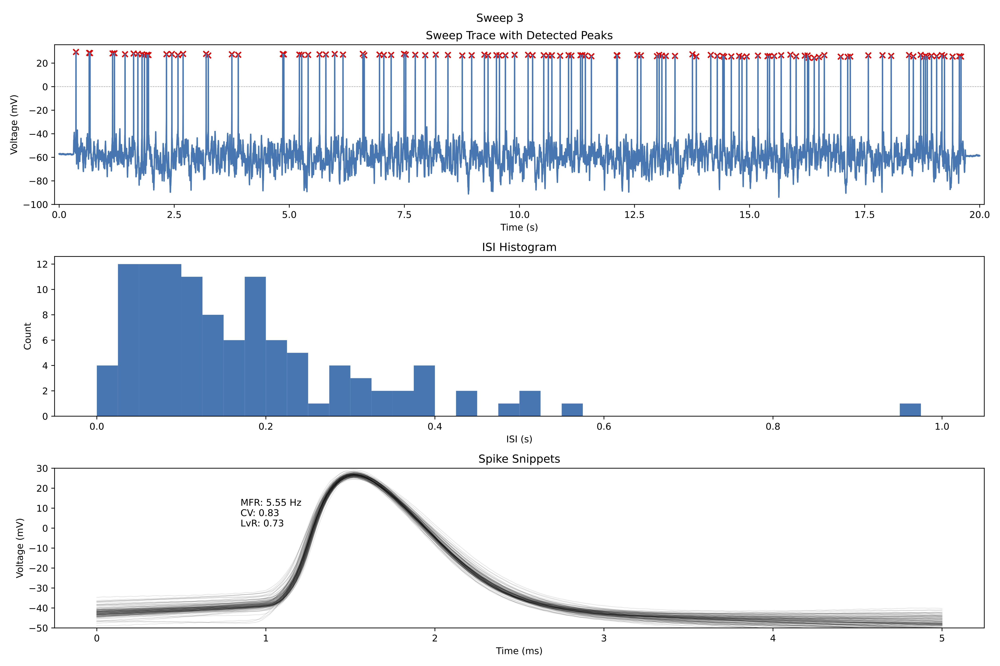

Usage#
If you are using the package for the first time, you should create a new setup. This setup will contain all the necessary information for the analysis and the generation of the .abf-files. Please refer to the First Steps for more information.
Do experiments#
There are currently three main commands available for running experiments:
pydg_generate: Generates input files only.pydg_analyse: Analyse a given recording only.pydg_generate_and_analyse: Generates an input file and tracks a given directory to analyse new recordings.
All these commands can be used with the `–help’ flag to get more information about the command and its options.
If the setup file is not in the current working directory, you need to specify the path to directory with the setup file. This can be done by using the --setup_dir flag.
Generate input files#
The following command line arguments are necessary for the generation commands:
<std>: The standard deviation of the input noise. This must be given, if input is generated.<corr_t>: The correlation time of the input noise. This must be given, if input is generated.
Ideally, the standard values of the input file (e.g. the number of sweeps) are already set in the setup file. Nevertheless, you can overwrite these values with the following command line arguments:
--n_sweeps: The number of sweeps to generate. If not given, the default value from the setup file is used.--duration: The duration of the sweeps in seconds. If not given, the default value from the setup file is used.--sampling_rate: The sampling rate of the sweeps in Hz. If not given, the default value from the setup file is used.--out_dir: The output directory for the ABF file. If not given, the default value from the setup file is used.--backup_dir: The path to the backup directory. If not given, the default value from the setup file is used (or out_dir/backup if not set in the setup file).
Analyse#
Two types for the analysis are available:
Analyse a given file.
Observes a directory for newly created files and analyse the latest file.
Use the flag --analyse_file to specify a certain file for the analysis.
Use the flag --input_dir to overwrite the input directory (“the directory to watch for new files”) from the setup file.
Both analyses types can be further specified with the following flags:
- --visualise: Whether to visualise the results (Overwrites the setup file)
- --analyse_dir: The directory to save the analysis results (Overwrites the setup file; default: input_dir/analysis)
Examples#
Generate input files#
With the setup file in the current working directory#
pydg_generate 3 0.1
Generates input files with an OU process with a standard deviation of 3pA and a correlation time of 0.1s.
With the setup file in a different directory#
pydg_generate 3 4 --setup_dir=/path/to/setup
Generates input files with an OU process with a standard deviation of 3pA and a correlation time of 4s. The setup file is located in the directory /path/to/setup.
Analyse#
The current analysis (‘mininal spike train analysis’) is sweepwise and will print the results to the stdout, e.g.:
Starting analysis of 2023_07_17_0055 ...
Sweep 0 has the following properties:
MFR: 4.75 Hz
CV: 0.78
LVR: 0.68
Furthermore, a PDF will be stored in the analysis directory (if selected). Each page will contain some overview plots of one sweep.

Most plot settings (e.g. start and duration of the overview plot or the number of bins for the ISI histogram) can be set in the setup file. See Deep Settings for more information.
Analyse a given file#
pydg_analyse --analyse_file=/path/to/file.abf
Generates a mini spike train analysis for the given file (sweepwise).
Generate and analyse#
Generate and analyse a given file (setup file in the current working directory)#
pydg_generate_and_analyse 2 0.025 --input_dir=/path/to/input
Generates input files with an OU process with a standard deviation of 2pA and a correlation time of 0.025s.
Furthermore, the directory /path/to/input is observed for new files. If a new file appears, it is analysed.
The observation terminates if all sweeps are analysed or 3 minutes after the the assumed recording time.
Generate and analyse a given file (setup file in a different directory)#
pydg_generate_and_analyse 2 0.025 --setup_dir=/path/to/setup
The standard values for the input file are taken from the setup file located in the directory /path/to/setup.
Update the package#
If you want to update the package, without recreating the environment, you can use the following command:
pip install --upgrade --force-reinstall pynamicgain
or
pip uninstall pynamicgain
pip install pynamicgain
I need help!?#
In general, there are two help functions available:
To get an overview of all available top level commands, use
pydg_help.To get information about a specific command, use the subcommand in combination with the
--helpflag. For example,pydg_generate --help.
If nothing helps, just write us! We are happy to help you out.
Other#
Don’t forget to activate the correct (conda) environment before you start the analysis. You can do this with the following command:
conda activate pydg_analysis